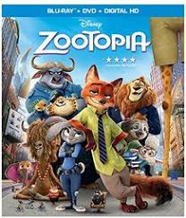
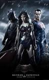
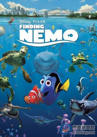
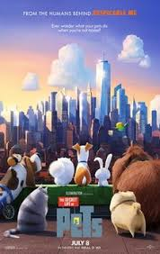
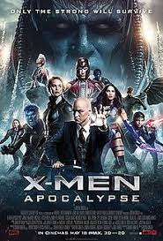

此網站介紹
本網頁為106年初學html製作
近期有加以修正(少數內容與呈現方式)
皆為手工製作、無使用模板
雖內容可能不多，但在樣式的處理上增加了些許變化
在可讀性上面整理了許多問題
並且橫線下方皆能夠查看當下頁面的介紹
其他頁面連結
2016全球電影票房排行榜前十名
| 好棒棒電影院 |
1. 星際大戰7：原力覺醒 點我看預告 |
2. 美國隊長3 點我看預告 |
3. 動物方程式  點我看預告 |
4. 與森林共舞 點我看預告 |
5. 蝙蝠俠大戰超人  點我看預告 |
|---|---|---|---|---|---|
|
6. 海底總動員2  點我看預告 |
7. 死侍 點我看預告 |
8. 寵物當家  點我看預告 |
9. 自殺突擊隊 點我看預告 |
10. x戰警：天啟  點我看預告 |